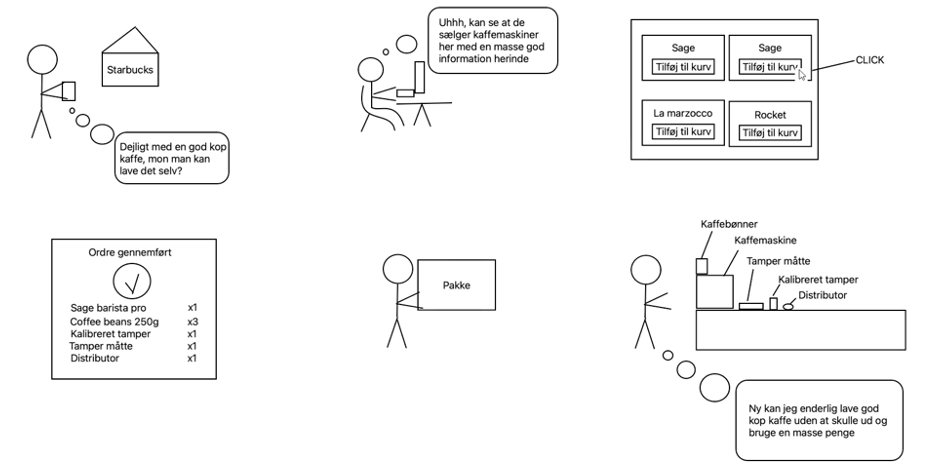

Tema 3 - Grundlæggende UX/UI
Formål
UX er i dag en fast bestanddel af udviklingen af digitale brugergrænseflader, og disciplinen spænder over uddannelsens fem fagområder med sine arbejdsområder, værktøjer og metoder.
Dette tema giver dig en grundlæggende forståelse for samspillet mellem brugere og brugergrænseflader. Derudover dækker det teorier, værktøjer og metoder, du kan anvende til research, design og testning i digital produktudvikling. Forståelse for dette samspil er afgørende, da designvalg og produktudvikling bør baseres på konkrete indsigter om virkelige brugere i stedet for diffuse fornemmelser eller umiddelbare antagelser.
Storyboard & Research
Storyboard
Min arbejdsproces begyndte med udarbejdelsen af et storyboard og en grundig analyse af, hvordan jeg kunne optimalt markedsføre det pågældende produkt. Jeg identificerede nøglemotiver for potentielle købere af espressomaskiner og tilhørende udstyr som en del af denne opgave.
Jeg valgte at konstruere en fortælling baseret på mine egne erfaringer samt observationer fra mine nærmeste kredse. Derved formidlede jeg ikke blot min personlige rejse med produktet, men inkluderede også perspektiver og overvejelser fra mine venner og bekendte. Denne tilgang bidrog til en mere nuanceret og bredtfavnende forståelse af motivationerne bag valget af espressomaskine og det tilhørende udstyr.
Research
Jeg igangsatte en omfattende markedsundersøgelse ved at analysere hjemmesider, der specialiserer sig i salg af espressomaskiner og barista-udstyr. Denne undersøgelse involverede nøje planlagte observationer, hvor jeg bad mine kontakter om at udforske tre forskellige hjemmesider, mens jeg dokumenterede deres interaktioner, præferencer og interesseområder.
Samtidig indarbejdede jeg en differentieret tilgang ved at undersøge en mangfoldig gruppe mennesker med varierende indkomstniveauer og aldersgrupper. Formålet var at præcist identificere min målgruppe og afdække potentielle kunder. Denne tilgang var særligt relevant, da jeg erkendte, at barista-udstyr og kvalitetsbønner ofte opfattes som luksusprodukter mere end nødvendige
Storyboard
Research

Styletile
Moodboard
Moodboard & Styletile
Moodboard
Efterfølgende besluttede jeg at skabe et moodboard med det formål at definere den ønskede atmosfære på webstedet. Jeg ønskede at trække inspiration fra stemningen på kaffebarer og lignende steder for at informere udtrykket og atmosfæren på min egen side.
Styletile
Derefter påbegyndte jeg udarbejdelsen af et styletile, hvor jeg præcist definerede farveskalaen, font-familien og udformningen af mine knapper. Dette arbejde blev grundigt informeret af min tidligere markedsundersøgelse samt inspiration og idéer hentet fra konkurrerende hjemmesider og kaffe-relaterede fora.
Wireframe & Prototype
Wireframe
Min arbejdsproces startede med at skabe en håndtegnet wireframe på papir for at omsætte mine tanker og idéer til en konkret visualisering.
Efter denne skitsefase tog jeg skridtet videre ved at digitalisere wireframen i Figma. Her udviklede jeg en detaljeret struktur, der afspejlede den planlagte opbygning og layout for at skabe en sammenhængende og funktionel wireframe
Prototype
Efter færdiggørelsen af min wireframe indledte jeg udviklingen af prototypen, hvor jeg fokuserede på at implementere farver, billeder og andre designelementer i overensstemmelse med styletilen og wireframen.
Med grundelementerne på plads rettede jeg opmærksomheden mod undersiderne. Jeg definerede nøje, hvilke knapper der skulle lede til specifikke destinationer, og præciserede det ønskede visuelle udtryk for hver side.
Efter at have afsluttet undersiderne gik jeg videre til at skabe en "live" version, hvor jeg sikrede, at knapperne fungerede korrekt og dirigerede brugeren til de rigtige destinationer. Dette skridt gav mig en realistisk forståelse af prototypens funktionalitet og brugeroplevelse.
Se min figma version af moodboard, styletile, wireframe & prototype her
Wireframes

Prototypes

Solutionsketch
Kopi & microkopi
Solution sketch, kopi & microkopi
Solution sketch
Efter at have genereret en række ideer og koncepter, deltog vi i en solution sketch-session i klassen. Her skitserede hver deltager individuelt flere sider på papir for at illustrere deres vision for hjemmesidens udseende.
Herefter blev klassekammerater inviteret til at markere relevante områder med tape, hvor de blev tiltrukket eller hvad der fangede deres opmærksomhed. Dette interaktive feedback-moment hjalp med at identificere effektive og mindre effektive elementer samt bidrog til en fælles forståelse af, hvad der fungerede godt, og hvad der ikke gjorde.
Kopi
Kopi på en hjemmeside refererer til al den skriftlige information og tekstindholdet, herunder overskrifter, produktbeskrivelser, og anden form for skrevet kommunikation på hjemmesiden. Det udgør den tekstuelle side af hjemmesiden, der formidler budskaber og oplysninger til besøgende.
Microkopi
Microkopi på en hjemmeside omfatter små tekstelementer som knaptekster, tooltips og fejlmeddelelser, der er designet til at guide brugere og hjælpe dem, ved at give præcis information på specifikke steder.
Sitet
Efter at have fastlagt mit design med farver, fonte osv., gik jeg videre til kodningen af min hjemmeside. Jeg begyndte med at strukturere header og footer, da de skulle være ens på alle sider. Først oprettede jeg headeren og tilføjede efterfølgende burgermenuen. Derefter organiserede jeg footer, som jeg opdelte i tre grid og designet den som et enkelt grid på telefonen. Efter disse forberedende trin kunne jeg begynde at opbygge selve indholdet på siden i forskille divs så jeg kunne begynde at opbygge mit grid system på hver enkelt sections